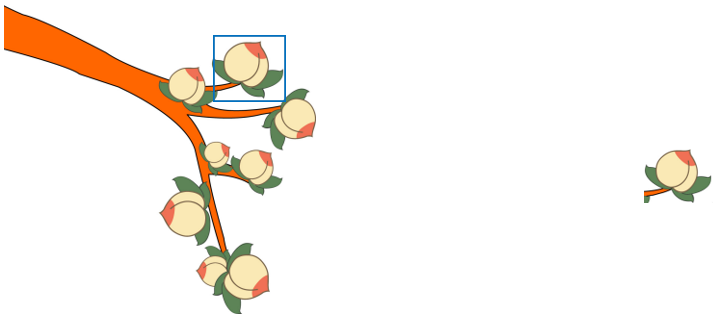

[TOC]
控制代码的执行顺序
从上到下依次执行代码语句
if(条件表达式){
表达式成立时执行的代码段
}
if(0){}
if(0.0){}
if(""){} //空字符串
if(undefined){}
if(NaN){}
if(null){}
if(条件表达式){
//条件成立时执行
}else{
//条件不成立时选择执行
}
if(条件1){
//条件1成立时执行
}else if(条件2){
//条件2成立时执行
}else if(条件3){
//条件3成立时执行
}...else{
//条件不成立时执行
}
switch(value){
case 值1 :
//value与值1匹配全等时,执行的代码段
break; //结束匹配
case 值2 :
//value与值2匹配全等时,执行的代码段
break;
case 值3 :
//value与值3匹配全等时,执行的代码段
break;
default:
//所有case匹配失败后默认执行的语句
break;
}
1. switch语句用于值的匹配，case用于列出所有可能的值；只有switch()表达式的值与case的值匹配全等时，才会执行case对应的代码段
2. break用于结束匹配，不再向后执行；可以省略，break一旦省略，会从当前匹配到的case开始，向后执行所有的代码语句，直至结束或碰到break跳出
3. default用来表示所有case都匹配失败的情况，一般写在末尾，做默认操作
4. 多个case共用代码段
case 值1:
case 值2:
case 值3:
//以上任意一个值匹配全等都会执行的代码段

定义循环变量;
while(循环条件){
条件满足时执行的代码段
更新循环变量;
}
do{
循环体;
更新循环变量
}while(循环条件);

与 while 循环的区别 :
for(定义循环变量;循环条件;更新循环变量){
循环体;
}

循环控制 :


封装一段待执行的代码
//函数声明
function 函数名(参数列表){
函数体
return 返回值;
}
//函数调用
函数名(参数列表);
函数名自定义，见名知意，命名规范参照变量的命名规范。普通函数以小写字母开头，用于区分构造函数(构造函数使用大写字母开头，定义类)

匿名函数：省略函数名的函数。语法为：
(function (形参){
})(实参);
var fn = function (){};
fn(); //函数调用

JavaScript 中作用域分为全局作用域和函数作用域，以函数的{ }作为划分作用域的依据

var elems = document.getElementsByTagName("");
/*
参数 : 标签名
返回值 : 节点列表,需要从节点列表中获取具体的元素节点对象,添加相应下标。
*/
var elems = document.getElementsByClassName("");
/*
参数 : 类名(class属性值)
返回值 : 节点列表
*/
innerHTML : 读取或设置元素文本内容,可识别标签语法
innerText : 设置元素文本内容,不能识别标签语法
value : 读取或设置表单控件的值


elem.getAttribute("attrname");//根据指定的属性名返回对应属性值
elem.setAttribute("attrname","value");//为元素添加属性,参数为属性名和属性值
elem.removeAttribute("attrname");//移除指定属性